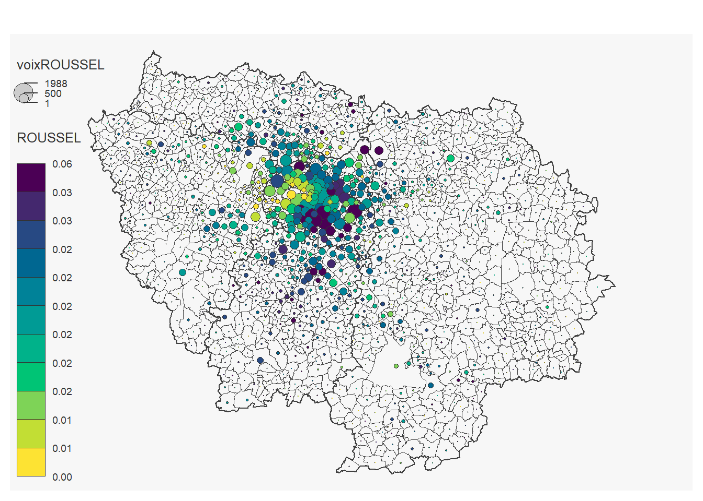
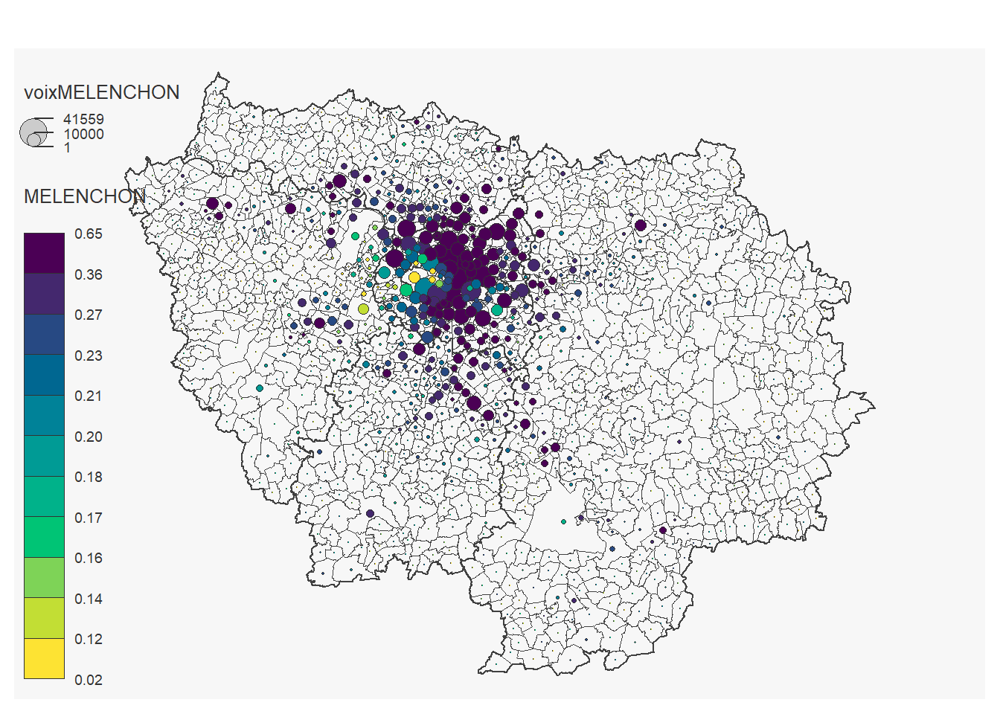
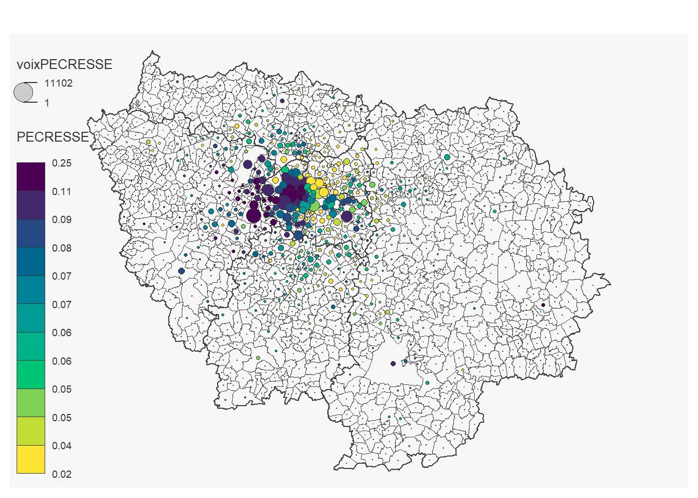
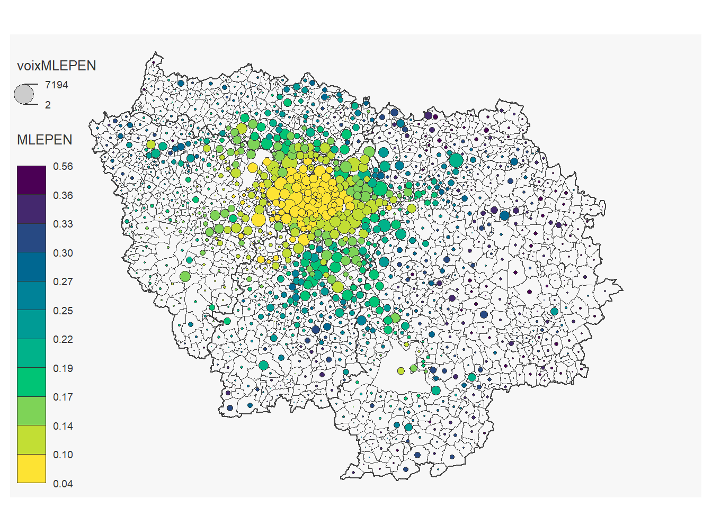
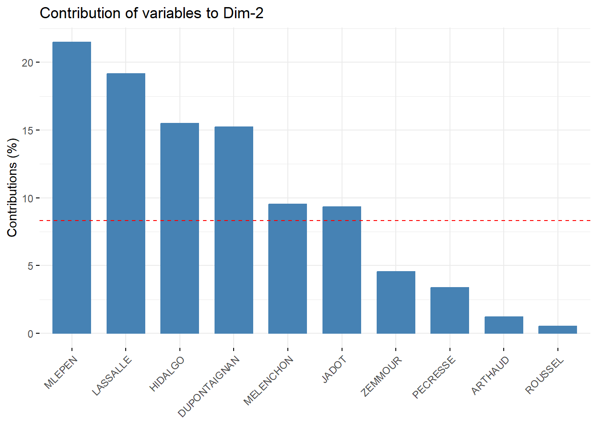
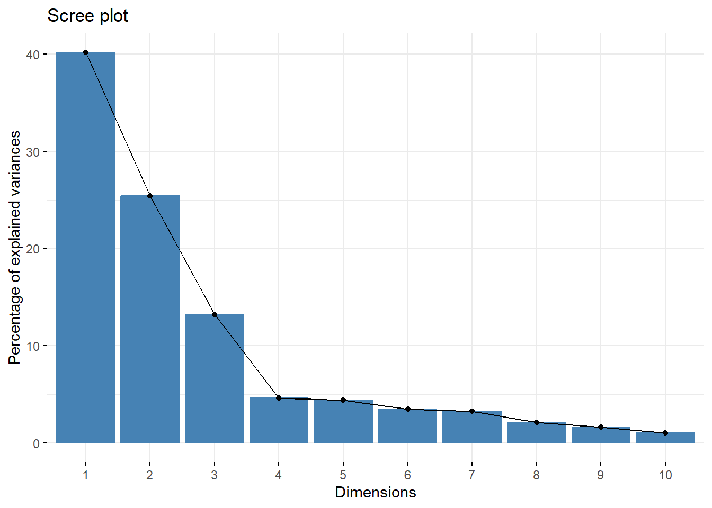
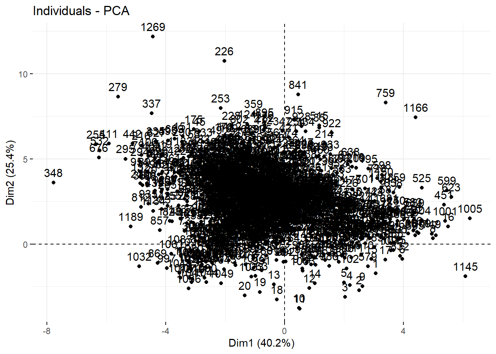

Ce fichier contient les résultats des élections présidentielles de 2022 en format csv. Ces fichiers ont été générés à partir des résultats électoraux disponibles sur le site du Ministère de l’Intérieur et sur data.gouv.fr. J. Cagé et T. Piketty (2023) : Une histoire du conflit politique. Élections et inégalités sociales en France, 1789-2022. Le Seuil.
communes: communes-20220101.shp (1)
arrondissement municipaux: arrondissements_municipaux-20180711.shp (2)
table commune - région : commune2021.csv (3)
revenus par commune : FILO2021_DEC_COM.xlsx (4)
population par commune: population_insee_2021.xlsx (5)
Welcome! Want to learn more? See two factoextra-related books at https://goo.gl/ve3WBa
Les objectifs pour réaliser une ACP sont généralement :
Débroussailler un large set de données avec plein de variables
Réaliser un indicateur synthétique
Préparer à une classification
Dans le cas ici, on va plutôt réaliser une ACP suivant le premier objectif sur les votes exprimés aux élections en Île de France aux élections présidentielles de 2022. L’objectif sera de voir on retrouve des structures dans la géographie de cette élection.
1. Importation des données
1.1. Élections 2022
Importation des données:
data<-read_delim("../data/France/pres2022comm.csv", delim=",") %>%select(1:19) %>%filter(codecommune!="75056") # %>% # On enlève la communes de Paris
Rows: 34867 Columns: 97
── Column specification ────────────────────────────────────────────────────────
Delimiter: ","
chr (4): dep, nomdep, codecommune, nomcommune
dbl (93): inscrits, votants, exprimes, voixARTHAUD, voixPOUTOU, voixROUSSEL,...
ℹ Use `spec()` to retrieve the full column specification for this data.
ℹ Specify the column types or set `show_col_types = FALSE` to quiet this message.
On prend une table pour ne sélectionner que l’Île de France:
Rows: 37742 Columns: 12
── Column specification ────────────────────────────────────────────────────────
Delimiter: ","
chr (11): TYPECOM, COM, REG, DEP, CTCD, ARR, NCC, NCCENR, LIBELLE, CAN, COMP...
dbl (1): TNCC
ℹ Use `spec()` to retrieve the full column specification for this data.
ℹ Specify the column types or set `show_col_types = FALSE` to quiet this message.
Reading layer `communes_arrond_ile_de_france' from data source
`C:\Users\hugop\Nextcloud\git\GEO_QUANTI\data\France\communes_arrond_ile_de_france.gpkg'
using driver `GPKG'
Simple feature collection with 1287 features and 4 fields
Geometry type: MULTIPOLYGON
Dimension: XY
Bounding box: xmin: 1.446244 ymin: 48.12015 xmax: 3.559221 ymax: 49.24143
Geodetic CRS: WGS 84
# On importe les arrondissements de Paris, Lyon et Marseillearrond_lyon_mars_paris<-st_read("../data/France/arrondissements_municipaux-20180711-shp/arrondissements_municipaux-20180711.shp")%>%select(-surf_km2) %>%rename(geom=geometry)
Reading layer `arrondissements_municipaux-20180711' from data source
`C:\Users\hugop\Nextcloud\git\GEO_QUANTI\data\France\arrondissements_municipaux-20180711-shp\arrondissements_municipaux-20180711.shp'
using driver `ESRI Shapefile'
Simple feature collection with 45 features and 4 fields
Geometry type: MULTIPOLYGON
Dimension: XY
Bounding box: xmin: 2.224122 ymin: 43.19714 xmax: 5.532476 ymax: 48.90216
Geodetic CRS: WGS 84
communes<-bind_rows(communes,arrond_lyon_mars_paris) # On joint communes et arrondissementsrm(arrond_lyon_mars_paris)
Warning in sf_column %in% names(g): Detected an unexpected many-to-many relationship between `x` and `y`.
ℹ Row 17 of `x` matches multiple rows in `y`.
ℹ Row 31675 of `y` matches multiple rows in `x`.
ℹ If a many-to-many relationship is expected, set `relationship =
"many-to-many"` to silence this warning.
On calcul la densité par communes:
communes<-communes %>%mutate(surface=as.numeric(st_area(geom))/10000) # On calcul le superficie de chaque communes
On créé un objet département pour la cartographie:
Warning in sf_column %in% names(g): Detected an unexpected many-to-many relationship between `x` and `y`.
ℹ Row 17 of `x` matches multiple rows in `y`.
ℹ Row 31675 of `y` matches multiple rows in `x`.
ℹ If a many-to-many relationship is expected, set `relationship =
"many-to-many"` to silence this warning.
`summarise()` has grouped output by 'DEP'. You can override using the `.groups`
argument.
rm(communes_table)
2. Recodage
Pour réaliser l’ACP il faut d’abord recoder les variables. On utilise généralement des variables en proportion:
data<-data %>%mutate(ARTHAUD=voixARTHAUD/exprimes,POUTOU=voixPOUTOU/exprimes,ROUSSEL=voixROUSSEL/exprimes,MELENCHON=voixMELENCHON/exprimes,JADOT=voixJADOT/exprimes,HIDALGO=voixHIDALGO/exprimes,LASSALLE=voixLASSALLE/exprimes,MACRON=voixMACRON/exprimes,PECRESSE=voixPECRESSE/exprimes,ZEMMOUR=voixZEMMOUR/exprimes,DUPONTAIGNAN=voixDUPONTAIGNAN/exprimes,MLEPEN=voixMLEPEN/exprimes)# De façon raccourcie, il est possible de réaliser de la façon suivante:# - en utilisant des pivot (tidyr) et un group by# data<-data %>%# pivot_longer(cols= 8:19,names_to ="candidat", values_to = "voix" ) %>%# mutate(voix=voix/exprimes) %>%# pivot_wider(values_from = "voix", names_from = "candidat")# - de façon encore plus synthétique, en utilisant un across:# data<-data %>%# mutate(across(8:19, ~ . /exprimes))
for (i in12:23) {# mf_export(x = communes_voix ,# filename =paste0("TP09/cartes_candidats/carte_",names(communes_voix)[i],".png" ),# width = 900)mf_map(x = communes_voix, col =NA, border ="gray25", lwd =0.1)mf_map(x = departements_Paris, col =NA, border ="gray25", lwd =1, add=T)mf_map(communes_voix ,var=c(names(communes_voix)[i], names(communes_voix)[i+12]),#val_max=max(unlist(communes_voix[,11:22])),type="prop_choro",pal="Viridis",inches=0.1,add=T)#dev.off()}
184 '0' values are not plotted on the map.
101 '0' values are not plotted on the map.
42 '0' values are not plotted on the map.


8 '0' values are not plotted on the map.
97 '0' values are not plotted on the map.
18 '0' values are not plotted on the map.

19 '0' values are not plotted on the map.

rm(i)
3.2. Matrice de corrélation
On peut réaliser une matrice de corrélation:
cor.mat <-round(cor(data[,20:31], use="complete.obs"),2) # round(,2) permet d'arrondir à deux décimale et use="complete.obs" permet d'exclure les NAcor.mat
Très peu de corrélation entre les vote Zemmour et Marine Lepene.
rm(cor.mat)
4. Réaliser l’ACP
4.1. Une ACP non pondérée
pca<-PCA(data[,20:31], graph=T, ncp =NULL)
L’objet pca est une liste dans lequel se trouve tous les résultats de l’ACP. On peut y accéder directement ou utiliser des fonctions préfaites pour visualiser les résultats:
# name description# 1 "$eig" "eigenvalues"# 2 "$var" "results for the variables"# 3 "$var$coord" "coord. for the variables"# 4 "$var$cor" "correlations variables - dimensions"# 5 "$var$cos2" "cos2 for the variables"# 6 "$var$contrib" "contributions of the variables"# 7 "$ind" "results for the individuals"# 8 "$ind$coord" "coord. for the individuals"# 9 "$ind$cos2" "cos2 for the individuals"# 10 "$ind$contrib" "contributions of the individuals"# 11 "$call" "summary statistics"# 12 "$call$centre" "mean of the variables"# 13 "$call$ecart.type" "standard error of the variables"# 14 "$call$row.w" "weights for the individuals"# 15 "$call$col.w" "weights for the variables"
4.2. Pondérer le calcul de l’ACP
Dans le cas précédent chacuns des individus à le même poid et chaque variable également. On peut décider de modifier les poids.
Pourtant, il existe de grandes différences entre communes:
Pour pondérer les variables on peut utiliser col.w Attention: pour pondérer, il faut que tous les poids soient >0. Dans le cas présent ça ne pose pas de problème.
Pour faciliter la lecture, on peut inverser un axe en multipliant par -1 (dans notre cas, il est plus intuitif d’avoir la gauche politique à gauche et la droite à droite):
Il faut alors aussi le faire sur les coordonnées des individus:
pca$ind$coord[,1]<--1* pca$ind$coord[,1]
On peut décider de ne pas afficher toutes les variables (si il y en a trop ça devient illisible). Ici, on décide d’afficher surtout (en modifiant la tranparance) celles qui ont le plus contribué à la construction de les deux axes (alpha.var=“contrib”) ou celle qui sont le plus prise en compte par les deux axes (alpha.var=“cos2”), soit encore de sélectionner celles qui ont un cos2 supérieur à un seuil (select.var = list(cos2 = 0.75) ) ou les 3 qui contribuent le plus (select.var = list(contrib = 3))):
On peut également afficher de façon graphique avec fviz_contrib:
fviz_contrib(pca, choice ="var", axes =1, top =10)
fviz_contrib(pca, choice ="var", axes =2, top =10)

5.3. Valeurs propres et % de la variance expliquée
Pour afficher les valeurs propres (eigen value) et le pourcentage de variance expliquée, on peut simplement afficher le tableau compris dans l’objet pca
On peut faire un graphique de la variance expliquées:
fviz_screeplot(pca, ncp=10)

Ces informations sont utiles pour nous aider à décider combien de composante retenir. Généralement, on s’arrange avec ces règles non-strictes: - eigenvalue > 1 - variance cumulée > 70% - gain faible d’une composante supplémentaire (ajouter une dimension supplémentaire ne permet pas de gagner beaucoup en variance expliquée)
5.4. Carte de scores
Chaque individus est reprojeter sur les nouvelles dimensions. Leurs scores sont stocké dans l’objet pca:
On peut souhaiter les visualiser dans un graphique à deux dimensions:
fviz_pca_ind(pca)

Forcément cela à du sens que si on a peu d’individus. Si les individus sont des entités géographiques, on peut souhaiter en faire des cartes.
On peut récupérer les score de chaque individus en collant avec bind_rows les coordonnées avec le set de données initiale. On doit utiliser ici bind_rows plutôt qu’une jointure (left_join, right_join) parce que l’agorythme de FactoMineR ne conserve pas d’ID lors de la réalisation de l’ACP mais il conserve bien l’ordre des lignes mise en entrée:
data_pca<-bind_cols(data, pca$ind$coord)
On réalise une boucle pour visualiser les 3 premières dimensions en faisant d’abord la jointure entre nos résultats et l’objet commune:
Pour aider à l’interprétation des axes, il peut être utile d’importer des nouvelles variables qui ne seront pas utilisées dans l’ACP mais qu’on pourra néanmoins utiliser comme repère.
6.1. Importation des données
6.1.1. Population
On importe les données de population:
pop<-read_excel("../data/France/population_insee_2021.xlsx", sheet="Communes") %>%mutate(codecommune=paste0(`Code département`, `Code commune`)) %>%filter(`Code région`=="11") # on garde que la France métropolitaine
On joint avec le fichier spatial des communes et calcul la densité de population
communes_pop<- communes %>%left_join(pop, by=c("insee"="codecommune")) %>%mutate(densite_ha=`Population totale`/surface) %>%select(insee, densite_ha)
On peut réaliser une carte de la densité de population
Warning in PCA(data[, 20:33], quanti.sup = 13:14, row.w = data$exprimes, :
Missing values are imputed by the mean of the variable: you should use the
imputePCA function of the missMDA package
On observe des fortes corrélations entre la première dimension qui dépeind une opposition gauche-droite et la variable de revenus, les revenus élevés étant associés aux communes où le vote de droite est important. La seconde dimension est quant à elle fortement corrélée à la densité de population et permet d’interprétée cette dernière comme l’opposition centre urbain-périphérie